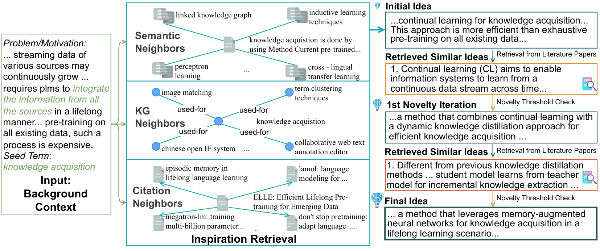
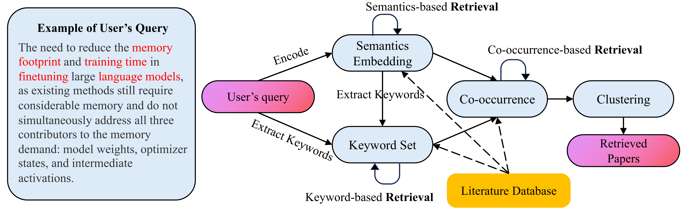
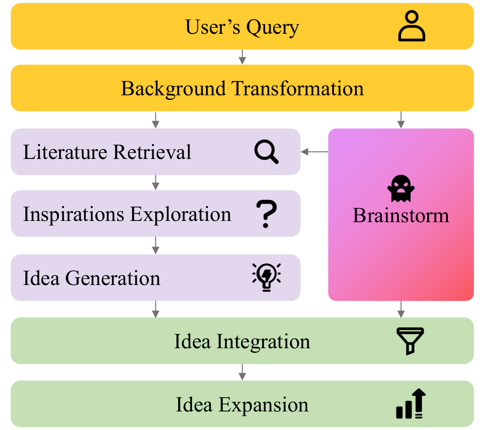

Idea 生成系统 横向可视化
八篇精读论文（CoI · Deep Ideation · SciMON · ResearchAgent · SciPIP · CycleResearcher · VirSci · Tree-of-Debate）用一套统一的视觉语言拆开：文献从哪进、知识怎么组织、idea 怎么生成、新颖性在哪一环保障、最后谁来评判。
全页所有流程图共用上面这套颜色 —— 同一个颜色 = 同一个角色，因此各方法的差异可以直接用眼睛扫出来。
① 总范式：一条流水线，五个槽位
The Universal Paradigm所有「文献 → idea」系统都在填同一条流水线的五个槽位。方法与方法的全部区别，就是每个槽位里填了什么、以及哪个槽位空着。
输出物（一句话 idea / 三段式 proposal / 完整论文 / 对比报告）由五个槽位的填法共同决定。
1.1八篇论文的槽位填充矩阵
这张表是全页的总纲：竖着看是一篇论文的完整配方，横着看是同一槽位上八种不同答案。
系统自检索 anchor 论文
② 八篇论文分成几大类？
Taxonomy按「文献知识最终栖身在哪里」这个最根本的分歧，八篇分成三个生成大类 + 一个评估件。槽位②（知识组织）的形态决定大类归属。
大类 A · 结构增强生成
知识活在「上下文」里；模型本身不动。
大类 C · 社会模拟生成
知识活在「社会过程」里；idea 是互动的涌现物。
2.1定位地图：两个决策轴上的八篇论文
横轴 = 知识载体（越靠右，知识离 prompt 越远、越沉进系统内部）；纵轴 = 新颖性干预时机（越靠上越偏"事后检查"，越靠下越偏"事前设计"）。右上和右下两个象限基本空着 —— 那是没人做过的组合。
位置为定性判断（依据各篇精读页的新颖性机制与知识组织方式），用于看格局而非精确坐标。
③ 大类 A · 结构增强生成
Structure-Augmented五篇论文共享同一个骨架，区别只在「文献被组织成什么结构」这一层。先看骨架，再看三种结构形态，最后逐篇拆流程。
共同软肋也来自骨架本身：增益有多少来自结构、多少来自底层 LLM，五篇都没有拆干净（ResearchAgent 的"随机材料也涨分"是最直接的证据）。
3.0三种知识形态一眼对比
3.1CoI（Chain of Ideas）· 把综述的时间结构变成 prompt 结构
向前：embedding 排引用者（代码闸门判错对象，实际只靠 embedding）
GPT-4o 汇总"Paper i→i+1"演化 trend
mini 判撞车 → 注入 bad case 重写
单 idea ≈ $0.50


独到：不训练，把"文献的时间结构"直接当 prompt 组织；评估用 Idea Arena（成对+ELO+双裁判）是全线最认真的协议设计。短板：向前扩链的相关性闸门判错对象（恒通过）；仅 OA 论文可入链；Idea Arena 复现代码未开源；ICLR 2025 被拒（5/5/5/8），AC 判"贡献天花板=结构化 RAG"。
→ 精读与代码审计页3.2Deep Ideation · 检索从"一次性"变成"图上游走"
无方向/权重/消歧；跨论文聚合函数 g 未定义


真增量只有两点：① 边挂 LLM 文本（比纯共现多语义）；② 游走式检索。致命伤：两点都没消融 —— 无法区分产出质量来自图还是 GPT-4o-mini（"与换皮 RAG 不可区分"）；"用真实评审训练 critic"系过度声称；主表数字自相矛盾；ICLR 2026 评分 2/6/2/2 零 rebuttal 撤稿；代码数据均未开源。
→ 精读页3.3SciMON → ResearchAgent → SciPIP · 一条演化线
三篇同构（三路检索信号 + LLM 生成），演化发生在四个维度：任务粒度放大、知识基础设施升级、新颖性机制换向、评测回归人评。▶=继承自前作 ▲=相对前作的改变 ✗=被丢弃
SciMON 流程：背景+种子 → 三路检索（语义/KG/引文）→ 实体级灵感 → GPT few-shot 或微调 T5 生成 → 查重迭代 ↺ → 一句话 idea。

ResearchAgent 流程：核心论文 → 引用图 top-10 + 实体 top-30 → Problem→Method→Experiment 三阶段（每阶段生成→五维评审→低分重写 ×3 轮）→ 三件套 proposal。

SciPIP 流程：用户背景 → SKC 三路互喂检索（语义→关键词邻域→共引→聚类凑 10 篇）→ 双路生成（脑暴 3–4 个 + 检索路逐篇提炼 inspiration 综合）→ 融合 ~5 个 idea 并借库存"精简方法"当格式示范扩写。


④ 大类 B · 训练内化生成
Training-Internalized唯一代表：CycleResearcher（ICLR 2025 Poster，AC「带保留接收」）。和大类 A 的根本区别：文献不进 prompt，进训练语料；生成不靠编排，靠权重。
4.1CycleResearcher · 把"写论文"变成可训练的偏好优化问题
训练侧（文献 → 语料 → 权重）：
4,991 篇 / 16k+ 条意见
学"从最低分到最高分依次生成评审"
输入=全部参考文献+摘要；输出=大纲/正文交替全文
但去掉迭代只掉 0.15 分，边际收益小
推理侧（一次性，黑箱）：
实验结果由模型自己编造，无注入真实结果的接口


⑤ 大类 C · 社会模拟生成
Social Simulation唯一代表：VirSci（ACL 2025 Main）。知识不进结构也不进权重，进「人」：真实作者档案变成 agent 人设，真实合作网络决定谁和谁讨论，idea 是社会互动的产物。
5.1VirSci · 用真实作者数据 role-play 一个虚拟科研界
按 y_bound 切分：过去库（agent 可见）/ 当代库（评测答案）
ON=(HD×CI)/CD；与人类评分 Pearson r=0.52

独到：首个真实作者数据驱动的学术协作模拟；时间切分对照库（B_past/B_con）是可复用的评测范式；还拿 Science of Science 文献做外部效度检验（8人×5轮达峰、50% 新鲜度最优、多样性倒 U）。短板：ON 无理论根据（同时奖励"远离过去+贴近未来"，实为预测热点）；生成/评测共享同一 embedding 空间的自证循环；代码审计发现"固定团队规模"被字符串匹配邀请机制破坏、择优有拼写 bug、HD/CD/CI 全套评测代码未发布。
→ 精读与代码审计页⑥ 评估件 · Tree-of-Debate
Evaluation, not Generation前七篇都在「产 idea」，但"两个候选谁更新颖"这件事全线都靠 LLM 一句话打分。Tree-of-Debate（ACL 2025 Main）把这个判断做成一棵可检查的辩论树 —— 它是给上面所有系统补的评估环节。
6.1Tree-of-Debate · 树形即结论
（辩"更新颖"反而更表面）
② Debate：present → respond → revise
③ 主持人判扩展：(推进∨有疑问)∧无赢家 → 再裂一层
先讲相似、重点讲差异


结果：Contextualization 95.21 vs 最强基线 75.57（+26%）；消融证明"结构负责语境化、检索负责事实性"。对 idea 生成线的意义：CoI 的 Arena 对战、SciPIP 的成对比较、VirSci 的查新投票，都可以换成/接上这棵辩论树 —— 判断过程从黑箱打分变成可追溯的论证结构。短板：标注者=评测者；基线全是裸 prompt（增益来自辩论还是更长输出分不清）；树深控制与论文不符。
→ 精读与代码审计页⑦ 全维度对比矩阵
Master Matrix| 维度 | CoI | Deep Ideation | SciMON | ResearchAgent | SciPIP | CycleResearcher | VirSci | Tree-of-Debate |
|---|---|---|---|---|---|---|---|---|
| 大类 | A · 结构增强 | B · 训练内化 | C · 社会模拟 | 评估件 | ||||
| 知识形态 | 引用链 | 关键词共现图 | used-for KG | 实体共现矩阵 | LLM 重摘要五元组 | 训练语料 | 人设+时间对照库 | 辩手 persona |
| 输出粒度 | idea+实验设计 | 三段式 proposal | 一句话 idea | P/M/E 三件套 | ~5 个段落级 idea | 完整论文 28K tok | idea+摘要 | 对比报告（无 idea） |
| 训练成分 | 无 | critic（LoRA Qwen3-8B） | 微调 T5（可选） | 无 | 无 | SFT+迭代 SimPO | 无 | 无 |
| 迭代 | 查重↺+对战 | 游走↺（停止未定义） | 查重↺（≤2轮） | 每阶段 3 轮评审 | 无迭代，双路融合 | 训练迭代，推理一轮 | 阶段内 K 轮 | 树逐层扩展 |
| 新颖性哲学 | 事后查重 | 图距离+事中打分 | 事后查重 | 评审维度 | 事前双路分工 | 基本空白 | 盲投+对照库 | 对抗辩论诱导 |
| 评估认真度 | ★★★ Arena+ELO 双裁判 | ★ 主表自相矛盾 | ★★ 诚实负结果 | ★★ rubric+人机一致 | ★★ v2 改人评 | ★★ 多口径但有幻觉 | ★★ 对照库+盲评 | ★★ 专家标注 100 对 |
| 工程完成度 | 评测代码未开源 | 仅 README | 脚本堆带必崩 bug | 推理壳不复现 | ★ 最高：7.5k 行+dump | 权重数据公开，训练码缺 | 开源但评测码缺 | 论文/代码/数据齐全 |
| 评审命运 | ICLR25 拒（5.75） | ICLR26 撤稿（2/6/2/2） | ACL24 ✓ | NAACL25 ✓（三轮 ARR） | ICLR25 撤→arXiv | ICLR25 Poster ✓（保留） | ACL25 ✓ | ACL25 ✓ |
| 一句话记住它 | 链比论文数量重要 | 游走式检索，验证缺席 | 任务定义的开山+诚实负结果 | 三件套+评审 rubric 的叙事模板 | 用更强模型重做基础设施 | 把写论文变成偏好优化 | 真实数据驱动的虚拟科研界 | 树形即结论的对比评估器 |